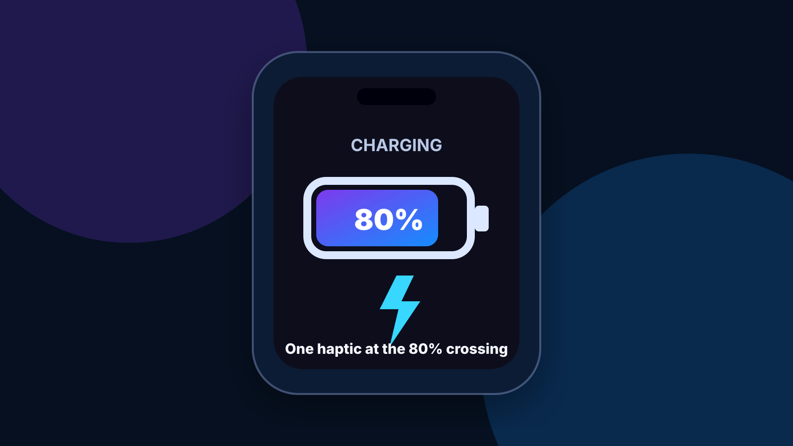
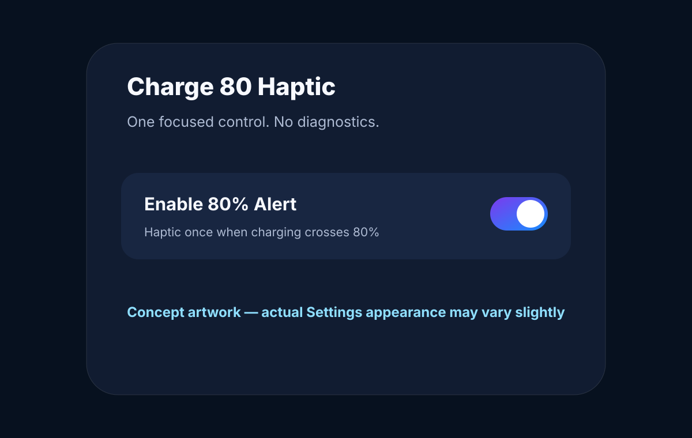

80% crossing alert
When a valid battery reading moves from below 80% to 80% or higher while charging, the tweak generates one success haptic.
Get one success haptic when your iPhone crosses 80% battery while it is connected to power. The tweak only alerts; it does not stop charging or alter Apple's battery-management rules.
Jailbreak required. Build validation passed, but the real charging transition still needs confirmation on a matching physical device. Artwork is conceptual.

When a valid battery reading moves from below 80% to 80% or higher while charging, the tweak generates one success haptic.
Already being at or above 80% does not retrigger the alert. Startup, unplugged and duplicate events are rejected.
Settings contains one real control: Enable 80% Alert. No developer diagnostics are exposed.
On the primary iPhone 14 Pro Max / iOS 16 target, there is no adjustable 80% Charge Limit control like the newer option Apple provides on iPhone 15 and later. Charge 80 Haptic does not imitate a charging limit—it simply gives a tactile cue at the crossing.

For RootHide environments using the arm64e package layout.
Download RootHide DEBFor standard rootless jailbreak environments using arm64 packages.
Download Rootless DEBUse the package matching your jailbreak environment. The RootHide and rootless packages are separate builds of the same 1.0.0 source.
UIKit battery notifications can be rate-limited, so the event may be delivered at 80% or slightly above; the implementation intentionally detects a crossing to ≥80%.
No. It is a jailbreak tweak.
No. It only plays a haptic and does not alter charging policy.
Charge80Haptic_1.0.0_RootHide.deb.
Yes. Turn off Enable 80% Alert in Settings.
Uninstall Charge 80 Haptic from your package manager and respring.